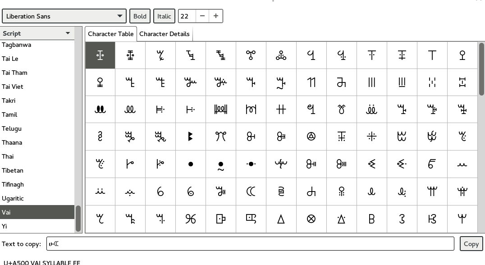
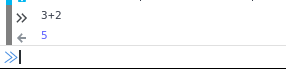
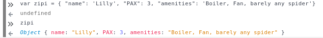

Perl 6, the musical
Table of Contents
- 1. Introduction
- ℵ - Principles
- б - Motivation
- α - Design thinking
- 2. The tools of the trade
- ß - We need to talk about Unicode
- 3. The expressions
- γ - Thinking like computers do
- 4. To infinity and beyond
- δ - Working as a team
- 5. Thinking logically
- ε - The command line
- 6. Pack all your troubles in a bag. And a set.
- ζ - Secure connection
- 7. Changing things
- η - errors are not errors
- 8. Where did I put my keys?
- θ - Web weaving
- 9. Working with, in and around data
- ι - Markdown for documentation
- 10. Functions include fun
- κ - Speak in tongues
- 11. Don't change this
- 12. Stand in the shoulders: modules and using whatever is available
- κ - Never program alone
- ד - Getting help
- 13. Building up: scripts and programs
- θ - Pack all your troubles in a container
- 14. you decide
- г - Always play it safe
- 15. Interacting with the user
- ι - Testing for the win
- 16. Interacting with the system
- 17. κ - lay the internet to rest
- 18. It's deja vu all over again
- Д - Find the bug
- 19. Regular expressions
- λ - What you need to know about the cloud
- 20. Keep things where you can get them back again
- 21. ж- Deploying to the cloud
- 22. Using stuff from the cloud
- μ - The world is my platform
- 23. Analyzing data
- 24. ν - Performance to the max
- 25. a classy affair
- 26. ξ - Agile development for the win
- 27. Keeping track of time
1 Introduction
This book is about learning programming using a promising, and almost completely new, language: Perl 6. But it is only Perl 6 specific in a minority of the content. Most chapters that deal with Perl 6 could be rewritten using any other language, preferably a new, cool language such as Go or Rust. I, or someone, might do it some day. But for the time being, let us be content with Perl 6. Which is also new and cool.
ℵ - Principles
A few principles that inspire this (book|booklet|manual|you name it), originally conceived to help non-programmers get into Perl 6
Learning should be fun and engaging: learn by doing.
The best way to make people actually learn something is by putting immediately to practice whatever is being learned, be it programming or weaving. So you should have your computer handy and learn the tools as soon as possible to put things to practice.
You are the master of your learning process, and tools, and outcome.
You should learn at your own step, stopping whenever you want and actually taking lessons when you feel like doing it. Engagement will ensue.
Learning never stops.
If you learn only during the short period where class is taking place, you will not learn too much. You have to digest and assimilate and come up with new ideas. Some of them will be relevant to whatever you are learning, some of them will be revealed as relevant later on, some of them will be simply discarded. But you can leverage whatever experience you have to enhance what you are learning, even more so if it is a programming language.
Learning is a two-way process. There is no professor, no student: learning happens ideally in a community.
This is kinda zen, but then the whole thing stinks of a holistic experience, where you learn about life by learning about programming and back. That also means that learning comes from every direction at once: the other students, maybe whoever is preparing objectives and material for the day, but that person will also learn new things about him or herself and about whatever is teaching, because the best way to learn is to prepare something to be taught to others.
Besides, there is no learning outside self-learning. But maybe that is a completely different story.
б - Motivation
This is (mostly) a book on Perl 6. But my initial intention was not to show how to program in Perl 6. Here are a few of my motivations, which might be also your own for actually reading and following this book.
Teaching programming to (almost) non-programmers.
Most programming books seem to be written either for people that already know how to program or for people that barely knows how to press keys. There must be a middle ground, and I try to tread it with this book. If know how to use a computer, you should be ready to go the whole nine yards and learn to create things in Perl 6 by the end of the book, if that eventually happens.
Contemplate the possibilities of Perl 6 as a beginner's language.
There seems to be a consensus that there is such a thing as a good language for beginners, and that that language is Python. Well, maybe it is, but why would any other languages, Rust, JavaScript or even C++ be worse? Asking about the best programming language for beginners is like asking about the best foreign language for beginners. Evidently, the best is the language you want to learn. If you want to learn Chinese, you do not learn first… whatever language is closer to yours and easier than Chinese (maybe Vietnamese? No idea, really, I got trapped in the metaphor). You learn Chinese and are done with it.
Point is, when you want to learn to program you usually have some kind of job or task in mind. The best language to learn programming is a language that can do that job. And Perl 6 can be that language.
Show the beauty and craft of programming.
"Good technically, but lacks passion" is probably one of the worst things that can be said about a musician or even a footballer. Should be the case also for programmers. Those focused on getting the job done well technically will probably lack the will, or the stamina, to learn new things or to completely switch the language or the toolbelt you are using. Along with programming, you have to make students learn the craft and also the beauty of a minimalist, fast and beautiful program.
Use project-based learning throughout and flipped-learning techniques.
Which boils down to "talk little, do a lot". No slides, no heavyweight course materials, just a screen with examples, and make people perform short tasks and reproduce what is being said by themselves. Hands have better memory than eyes. Use that.
In this book, in most cases activities will have a particular purpose and will follow or flow from one chapter, or asides, to the next ones, so that you will end up building one, or several, scripts or programs or even notes that will be useful by themselves.
α - Design thinking
This has been mostly obtained from this document at Stanford University. Design thinking teaches you how to think like a designer, which means thinking in a way that allows you to create something that is satisfying for yourself and that fills the need of a customer. In the free software realm, oftentimes you are customer, so you will be satisfied twice for the same low price. Anyway, there are several phases in thinking like a designer. They are usually these ones.
Empathizing
Find users, find out about them, care about them, know their stories. Maybe you are the user, maybe it's someone close to you.
Definition
Define the challenge, what you want to do, express the problem. This phase can be merged with the next one, since it is difficult to define the problem without recourse about how you are going to solve the problem itself.
Ideate
Try to find out the solution to the problems your users have.
In this phase you are supposed to produce ideas to solve the problem. There will be no restriction other than whatever is required by your target. You might want to create problems that imply certain devices and not others, or solutions that cost no more than a certain amount of money.
Prototype
We will transition to actually doing something, incrementally. And this is a phase, together with the following one, that is actually in the engineering realm, so we are in familiar ground here.
Test
If you are the user yourself, try it out. See if it is useful as intended. Actually, test-driven design dictates that you cannot actually prototype without testing in advance. So testing and prototyping go hand in hand.
2 The tools of the trade
This part will not be leading away from the design thinking mindset, but actually will be getting into the last phases of it. Whatever idea you had in mind will have to be kept stashed to go back to it whenever you need it. In fact, we are entering the phase called prototyping, or seen in another way, you are trying to solve a problem for a target audience, yourself, by choosing the right tools.
In this phase you will find that there's no perfect tool for doing everything.
Although the combination Linux + Emacs comes pretty close
Let's start with the operating system. That would be Linux. Whew, that was short. But let's proceed to that thing that actually allows users to run programs, the shell.
2.1 Shells
Then, the command line interpreter, also called shell. This might seem like a given, but in fact different command line interpreters have different capabilities. In fact, even the humble bash has interesting capabilities you can use. Main thing you want to tap is the possibility of displaying interesting information in the command line, such as the directory you are working on or, later on, the branch of the repository you are in. And, in that sense, there are quite a few choices here, but the main thing about them is the possibility of theming them, that is, making a configuration that allows, mostly, find the information we mention above by just selecting a theme. In that sense zsh and fish are very strong contenders. Install them the usual way, and then select a theme that goes easily with your programming habits; Oh My Zsh or bash-it are good places to start.
Play a bit with the themes or options until you find one with all the colors and contrast you want. And then come back here for the…
2.2 Editors.
The choice of an editor goes beyond mere utility to become an identity, a side to stand when the flame war starts. As above, the motto is always suit yourself, but since we are in the realm of Perl6, I would propose Atom as the editor to use. It is a modern editor, it has got a good and evolving support for Perl 6, and it is free software.
Not that the traditional Emacs and Vi/Vim are not good choices too. At least Emacs, but Atom is easier to use and is improving in speed and support by the minute. Besides, it has got everything it takes for professional editor: syntax highlighting, being able to do some checks from the editor itself, and allow running and debugging. It has got all that, so that will be it.
To go with the editor, you need some relatively fast way of inputting some characters such as ሁ or Щ. I have used the application "Character Map" that comes with Ubuntu; after finding a character by the name of the alphabet, you can go to Character Details and copy/paste it to wherever you want it used. You can also click twice and the character will appear in the "Text to copy" slot.

Of course, something would be missing here if I did not mention `vim`. Here you go, a mention.
2.3 Shells within editors
Editors are cool because they allow to work with all kind of symbols
that are not exactly text, or that cannot be produced with a
combination of key strokes. Emacs is great at that, and it can access
the whole set of symbols that are out there by name using a
combination of keys. And it can also run a shell inside, your favorite
shell, in fact. So enter emacs and then type Escape key + x and
then, when a prompt appears in the lower line, shell and you will
have your shell running inside Emacs, with access to all kind of
goodies, like saving sessions as files, searching using all Emacs
facilities, and all kind of symbols that can be used in it.
ß - We need to talk about Unicode
This does not belong to the language proper, but it is still something that has to be mentioned. Languages are used to write applications, and these can use any language in the world. Unicode is the way to use any alphabet, and some neographies and emoticons, in our programs. Luckily enough, Perl6 packs one of the best supports for this; unluckily, Unicode is complicated per se, so we will have to learn a bit of linguistics to understand how we, later on, are going to handle this, which we will even if we write only for ourselves.
First important concept is the codepoint. A code point is pretty
much equivalent to a letter, although it can be a symbol or also a
formatting instruction such as Tab or Newline. Every code point
corresponds to a numeric combination, which is usually expressed in
hexadecimal; for instance, 0x2017 corresponds to the character ‗,
part of a table-drawing set. Every character also has a series of
attributes, including the category; this character belongs to the Po
category,
meaning that it is Punctuation, other. The properties include a
series of attributes such as the fact that they are numeric or can do
things like folding to a particular case or be joined to the next
character, or even if the direction they are written in.
Characters are written as graphemes, and usually a code point corresponds to a single written grapheme; however, in some cases code points group to form a grapheme cluster, which is a set of code points that constitute a grapheme; the most common example is letters with marks such as á, but more complicated expressions might be thought of. Or not, depending on your imagination.
You write graphemes and grapheme clusters as glyphs, or letters. And these are typeset, in a particular environment, using fonts. A font is a set of mathematical formulae, yes, there is math involved, that allows to render a particular letter in many different sizes and forms such as italics or boldface. The fact that they are a formula, and that you have to design formulae for every single glyph, means that not all glyphs might be available in all fonts. Some fonts will have all, or most of them, some of them not. And that, in turn, means that some Etruscan letter such as this one 𐌚 that renders beautifully in your editor might show up as an x-marked rectangle or question mark somewhere else, a console or a word processor. In fact, depending on how you are reading this, you might not see the glyph I'm referring to at all. Some other glyphs, like this jack of diamonds 🃋, will not show up on your editor or even in a PDF document. However, you will be able to see it in most browsers.
Your take away message here should that you need to know how to use Unicode in whatever program you use, and that some particular structures of the program, like operators or names, will use graphemes with particular properties, probably something alphabetic-like. Also that Unicode is complicated, but that you should better learn about it as soon as possible, as in now.
3 The expressions
The first thing you need to know about a language, any language, is how to compute things. Compute in the more general sense: combine things to give other things. This, in general, is called expression, which, also in general, is a bunch of symbols linked by operators.
Generally, modern computer languages are able to work with many different kind of symbols, and Perl6 is no exception. Let's start with that.
3.1 REPLs and how to use them as glorified calculators
A REPL is a Read-Eval-Print loop. it is a program included with most interpreted languages, that presents a command-line prompt and into which you can type expressions, and, later on, full statements. But, for the time being, let's type
perl6
And we will be into a perl6 REPL into which you can type Perl6 stuff.
Let's try the simplest thing:
To exit type 'exit' or '^D' > sin(π/2)
You will have to find a way to type that π, by copy/pasting it from some website or google or right this. It will return the sine of π/2, which, as you know, is 1.
And this is cool, because only some languages are able to handle this kind of expressions, and, even more, to use it correctly in math. But you can do even more:
sin(π/2) +1
You can do that by copying/pasting, or else install Linenoise, a
command line that allows you to go back to previous command by typing
arrow-up. Do it with
zef install Linenoise
You can use the usual arithmetic operators +,-,*,/ but Perl6 adds
two typographic operators, ÷ and × (these ones are produced in the
Spanish keyboard with May+AltGr+ comma or period), like
sin(π/3) × sin(π/3) + cos(π/3) × cos(π/3)
Or, even better
sin(π/3)² + cos(π/3)²
One of the objectives of Perl6 is to use the whole range of characters that Unicode, if not modern keyboards, offer. This simplifies expressions and makes them more readable.
You will not find all numbers in superscript mode. If you want to
raise a number to the /x/th power, use **.
3**25
Arithmetic only takes you so far in programming. We will learn how to deal, and operate, with all kinds of data in this glorified calculator.
3.2 Now that we mention Unicode
Unicode is the way to express all alphabets in the world, and then some things that are not really alphabets. It uses up to around sixty thousand symbols, and allows us to write, using modern operating systems, editors and languages, anything that would have to be expressed in living or dead languages, and even some emoticons. Unicode is evolving constantly, and for the people means that they will be able to use characters that are usual in their own language, and also some usual in mathematical expressions.
Since not all languages, editors, operating systems or even keyboards are modern in that sense, some impedance should be expected. But Perl 6 will not get in your way, allowing you to use them just they way they should, so if you want to raise something to the second power you will not have to, although you can, write x**2 but simply x².
3.3 It's not only numbers
All the expressions written above are numbers.
(sin(π/3)² + cos(π/3)²).WHAT
is going to return (Num), indicating that it is simply a Number,
actually a real number. This .WHAT, together with surrounding the
expression via parentheses meaning grouping, is a way to apply a
property or to call a method on that object. In Perl6, everything
is an object, and objects have a class, and you want to call methods
that correspond to objects of that class, append a dot and use the
method, possibly with some arguments like WHAT(is, "the",
$what). Let's not worry about that for the time being, or about
classes themselves. Just with the fact that every expression is an
object, and those objects belong to a class; every class in Perl6
descends from the ur-class called μ or Mu. And among the
properties of Mu is that you can call this WHAT. Any other class
descends from this one, so you can call .WHAT on any object of any
class. That is the take-home message, even if you might not know, so
far, what is an object, or a class. Second take home message:
different objects also have different classes.
Since both objects at the sides of the + are Nums, you
can add or subtract them or do any other arithmetic operation, but you cannot do
sin(π/3)² + cos(π/3)² + " is 1"
will yield this error

Figure 2: Errored expression in the REPL
And the reason for that can be found out by typing:
" is 1".WHAT
Which, whatever it is, is not a Num, so it cannot be added.
That shows that there are more types of data you can use and work with
from the REPL. In fact, there are a lot. In general, you cannot mix
and match and, also in general, every one has got its own operators
you can work with. You can mix fractions with integer numbers, for
instance:
⅓+4/3
And
(⅓+4/3).WHAT
will return (Rat), a Rational, same as ⅓+4. In fact, most
floating point numbers in Perl 6 will be represented as rational,
unless we explicitly tell the interpreter to deal with them as
floating point, that is real, numbers, which, BTW, cannot be something
else that fractional numbers since they use a finite representation in
computers. Mostly.
However, in some cases you can try and mix different things using an operator. Operator "~" concatenates stuff, that is, joins things that look like words and letters, for instance
6 ~ "6"
will return 66, and anything you put there will be concatenated. ~
is an operator that is not picky about what it has got in both ends.
You cannot add strings together, because that is what they are, but curiously enough, you can multiply them:
"1" ~ "\n" ~ "2" x 2 ~ "\n" ~ "3" x 3 ~ "\n" ~ "2" x 2 ~ "\n" ~ "1"
This being a rather nice and utterly useless example on the operator
x, which multiplies or rather replicates whatever character of
string it is related to. Introduced together with =\n", the carriage
return, so that if forms a nice pile of stuff.
Which is shorter and better in this example
for <1 2 3 2 1> { say $_ x $_ }
but that's something we will see later on, when we talk about loops and all that's nice and beautiful about it.
3.4 Lists of things are also game.
Numbers and words are simple things. But you can string them together in something more complex. You can have groups of them, or lists of them, or combine them as sets of lists of sets of whatever. Perl 6 is great because you do not need to make all things in a complex structure be of the same type. You can create a list with the less than and more than sign, this way:
<a b 7 ⅓ π²>
And with lists, you can do things like sorting:
sort <a b 7 ⅓ π²>
or combine lists to create a new one using the X operator, called
cross product
<a b 7 ⅓ π²> X < → ← >
You can also combine in some other ways, adding one list to another.
<a b 7 ⅓ π²> , < → ← >
The simple comma operator is going to create a new list with two elements, each one of which is a list. You can flatten it:
flat <a b 7 ⅓ π²> , < → ← >
You can already do interesting things with these lists (or arrays, or vectors, stuff in a row, whatever). For instance, you want to pick one element randomly,
(flat <a b 7 ⅓ π²> , < → ← >).pick
will return, every time you run it, a different element. You can do
that as many times as you want, but it is much easier to use roll to
do it many times for you.
< → ← >.roll(6)
will return a whole quiver of arrows.
Maybe you want a single element of the array:
< → ← >.roll(6)[3]
This will return the 4th element, taking into account that all arrays start with 0. Otherwise known as a random arrow. Or you might want to extract a range
(flat <a b 7 ⅓ π²> , < → ← >)[3..6]
uses the range operator .. (that is, two points), which generates
a contiguous sequence of elements. Otherwise known as, well,
range. But these ranges also behave as arrays:
#+BEGINEXAMPLE perl6
(0..10)[3..6]
#+ENDEXAMPLE perl6
although they are not exactly the same:
#+BEGINEXAMPLE perl6
(0..10).WHAT
#+ENDEXAMPLE perl6
will, effectively, return (Range).
This is just the start of complex structures with Perl. More to come in the next chapters.
γ - Thinking like computers do
You probably know, or at least have made an educated guess, that computers are unlike humans. But since expressions are entered in pretty much the same way you would use somewhere else, it's no big deal. However, once you want to deconstruct what actually needs to be done to make a computer do whatever you want it to do, you have to start to think like a computer, in what is known as computational thinking. It is kind of a game of "Simon says". You have to precede every instruction you give a computer by something that indicates you want it to do precisely that, and then you have to say very precisely what it needs to do.
But there is more to that, the fact that you also need to indicate the sequence of actions you want the computer to do by indicating that in your program. When you work with the REPL, as we have done above, the sequence is quite clear: you say something, press Enter, the computer thinks for a while or what looks like nothing, you have the response. However, when the program gets a bit more complicated, you also have to think, in a particular point in time, where the computer might be and what that implies regarding values or results you need to proceed.
Which is why we talk about computational thinking as a series of techniques for solving problems using computers, including all the steps you need to take to identify the problem, put it in a way that can be understood and processed by a computer, and then express every step as instructions in program that will, eventually, solve the problem.
We will get back to this later on, but for the time being there are a couple of techniques you will need to understand. First is pattern recognition, which means finding what several different pieces of information have in common and, in turn, what to do to solve a problem in a case given that you know how to solve it in another case which follows the same pattern. When you find something that has a regular increasing or arithmetic pattern, for instance, you will discover that you can use lists or sequences to solve it, and apply whatever you know already on how to deal with sequences.
The second technique we should focus on right now is problem decomposition, how to break down a problem in different parts that can, more easily, solved. For instance, you want to find what would be the number a sequence will reach if left to grow until infinity; first you will have to solve the problem of representing the sequence, which might not be immediate, and then how to apply known techniques of limit finding, such as finding the function that represents the sequence and then applying what is known about function limits to that sequence.
Every part of a problem will eventually become an instruction or group of instructions called usually subroutines or functions. But for the time being, it is enough to know that breaking down a problem in parts you already know how to solve is the key for solving problems of any size.
4 To infinity and beyond
If you know in advance every single term of a list, writing them down as above is the way to handle them. However, you might know a few terms of the lists, or how they are generated, and that is that. Let us see how to deal with them in Perl 6
4.1 Working with ranges and sequences
For long lists, you might want to use only the first and last term
1...222
via the yada, yada, yada operator, or, even better,
1 … 333
But the coolest thing with lists is the stuff you can do to all of them at the same time:
[+] 1 … 333
will add everything together. Any operator you put inside brackets
will be applied to all in turn. Try [*] 1 … 333, for instance.
But the coolness factor can be increased:
[+] 1,3 … 333
and even
[+] 1,3,9 … 333
The [] is called a reduce operation. If you have heard some big
data buzz, you have probably heard about an operation called
map/reduce. Well, this is the reduce part. And it is so easy to do
with Perl6.
Because Perl6 is able to deal with arithmetic and geometric progressions out of the box. And even infinite ones:
1,3,9 … ∞
You can obtain the 100th term using
(1,3,9 … ∞)[100]
or, why not, the terms from 1000 to 1100
(1,3,9 … ∞)[1000…1100]
which will return a pile of numbers, separated by spaces. It is quite usual to start from 0 and go to a particular number. The caret = ^ = is used to indicate 0 to the number that follows it
(0,5,10 … ∞)[^25]
will list the 25 first elements of the list of multiples of 5.
Besides, at the same time, we have seen how to deal with a single term in a list, and how to work with a series of terms. You can use infinite syntax to generate also finite lists if you do not want to compute in advance the precise terms of it. For example, above you will be working on the 1000th term and on of an infinite list, without working out if it is exactly 3000 or some such. You can check out this Advent calendar entry for a few samples of Perl6 coolness too.
4.2 Operating on lists
Lists are perfectly good subjects for this calculator on steroids we
have in the REPL. Whatever combination you think about, it is probably
possible to do it on lists; some of them will work also on infinite
lists, but most probably not. We have already seen [+] work on a
list of numbers. Any sensible operation like [*] will also work. But
this will also yield a result:
[~] 'a'..'z'
collating together all elements in the alphabet. Preceding it with
\. which you can think of as an accumulator, will instead create
another array whose elements are the accumulation of the operation up
to that element. Better if you try it:
[\~] 'a'..'z'
This can be very useful when working on accumulative series, for instance, what is the sequence of factorials up to 25?
[\*] 1..25
This accumulator is called a zip operator. We will see later on what it actually means, for the time being it just makes operating with series a bit easier.
But single lists only take you so far. Previously we have seen the
comma for kind-of joining two lists. But there are multiple ways of
creating new lists by combining them. For instance, the cross
operator X will create a list of lists from two of them
(1,3...10) X (2,4...10)
will combine all even and odd numbers in pairs, combining 1 with 2 to
10, then doing the same with 3… This can be useful if you want to
create a combination, but even more so if you turn X into a
hyper-operator by using it to precede any operation such as *
(1,3...10) X* (2,4...10)
will create a flat list with the results of multiplying the pairs we
have generated before. This can be useful for complicated arithmetics,
but sometimes we only want to pair a couple of lists to create a new
one that takes one element from each one, combining them like the
tooth of a zipper. This operation is appropriately named Zip and
represented by Z
(5,10...Inf)[^20] Z (4,8...Inf)[^20]
This creates a new list that zips together similar terms in the sequence of multiples of 4 and 5. Can we multiply them to create a succession of multiples of 20? Maybe…
(5,10...Inf)[^20] Z* (4,8...Inf)[^20]
4.3 Doing stuff to lists
Well, that is precisely what we have been doing above. But we need to do more. A lot more.
All we have been doing is combining lists with each other. We have also been using lists of exactly the same length. But we might need to do some basic operation to a list, or create one list that is not exactly an arithmetic or geometric progression. For instance, this
(1/2,1/3...Inf)[5]
will not do what you expect it to do, which would be 1/5. Writing the whole range
(1/2,1/3...Inf)[^5]
will show that, what it is actually doing is to turn it into an
arithmetic sequence that subtracts 0.166667 from the previous one,
despite being relatively clear, for a human, that we are trying to
create the 1/n. Succession. We can do that, however, using the
hyperoperators <<>> and derived. Check this out
1 <</<< (1..100)
will return precisely what we are looking for, a descending sequence of numbers that ends with 0.01. Please note that we can no longer use an infinite (lazy) sequence: we have to be concrete.
This <</<< is known as an hyperoperator, because it takes a humble
operator like / and turns it into a machine that deals with
lists. It can also be written «/« with the direction of the angular
brackets pointing at the smaller thing, in this case a single number
vs. a list.
What happens if you do
<1 2> <</<< (1..100)
is kind of funny. It is like applying the cookie cutter in the left
hand side to the right hand side: the first element will be divided by
1, the second by 2, and so on… You can even take one wing << from
the hyperdrive, and use it to, for instance, negate a sequence:
-<< (1..100)
When the two lists have the same length, the arrows can go in any direction, it will not matter much. Let us create random fixtures for a (subset of) the Premier League
( <ARS AST BOU CHE EVE LEI LIV MCI MUN NEW>.pick(10)
«~»
( " - " «~« <ARS AST BOU CHE EVE LEI LIV MCI MUN NEW>.pick(10)))
»~» "\n"
This, which could admittedly be a little shorter, uses these
hyperoperators to combine acronyms so that they are separated by a dash,
which is what = " - " «~« = does, and then put the whole result in
different lines, which is done by the = »~» "\n" = in the last line. A
great achievement, with a small amount of coding involved. We are
using throughout the ~ string concatenation operator, which is what
allows us to create such a compact statement.
δ - Working as a team
You will never walk alone when solving a problem. Even if you are
working in a side project, something you thought about yourself, you
will need an easy way to keep track of changes and also to easily
incorporate whatever suggestions or even changes somebody else might
be doing to your code. And that easy way is to use git. git is
described as a distributed source code manager, but it is much more
than that, it is a way of life. git organizes code in
repositories, pretty much corresponding to projects, but including
also artifacts such as documentation, manuals and examples.
As a way of life, it needs much more than a single section in a book. You will eventually learn as you go, but for the purpose of this, let us say you have opened an account in an online Git server such as GitHub. GitHub is free for public repositories, and even for a few closed ones if you are a student. If you do not feel comfortable with this, do not worry, you can use BitBucket, which allows private repositories with some limitations on the number of users and number of repos.
Be that as it may, you will need a repository to store all the files
that you will be writing in this, maybe also your course notes. It is
going to be fun start to create a single program, and keep changing it
over the same file; git will record changes and you will be able to
track your own progress over this file. In order to do that, create a
repository or project in any of them, and
choose a sensible free software license, as well as Perl as a language
(closest to Perl6) and also generate a README.md, which is in
Markdown.
That creates a git repository in whatever computer hosts GitHub (or BitBucket), but git is a distributed system, and you can synchronize your computer with the contents of the repository out there. Bring it down with
git clone https://github.com/yourname/yourrepo
and please note I am using https here. You can also use the ssh
address, which will be something like git@github.com:yourname/yourrepo.git and in fact you should, but for the time being let us let it
be. Remember to take down the username and password you have used,
because you will need later on.
That command will create a yourrepo directory hanging from wherever
you are. Change to it with cd yourrepo and start working there. For
instance, create a new file with touch a_new_file. Not everything in
the directory is in the repository, you have to purposefully add to
it.
git add a_new_file
This only tells the repository it should be aware of the file. But then you have to actually do something about it, like telling the repo you are happy with the file such as it is and it should be registered, or committed. You should go:
git commit -m "Adds file for doing stuff"
You are not done yet. All these changes are local. You can continue adding things
5 Thinking logically
In many cases you are going to need to check whether something is true or false: check if a file exists, check if a number is bigger or smaller than another, or even check if a complicated logical proposition is true or not. In fact, everything in computers uses logic, to the point that all information is codified using true or false values; a single true/false value is called a bit. There are so many layers over that single bit that you do not need to be much concerned about them, but you need to know about expressing and using logic in programs, and specially in Perl 6, because computing is all about taking decisions, doing this or that depending on something else. That is what we will deal with right next.
5.1 The truth is…
"Out there". "I am your father". All of these things together. Well,
truth is True and false is False in Perl6. However, there are
other things that are also true, or not, depending on the context,
because, as we have seen before, the types and thus the real value of things flow and change
depending on the context. Fortunately, we have a handy operator that
asks any and everything if it is true or not: ?.
So let's see what kind of things are true or not:
?<< ("","False",0,1,333,0.5)
will show us two False=s; the "" and the 0. So empty strings and void
numbers are equivalent to false. Also empty arrays, check out =?(),
while non-empty arrays are True. Besides, we are using here,
similarly to what we used before, a single operator applied to all the
elements in a list, which we surround with parentheses and sprinkle
with commas since they are of different types: strings and
numbers… This operator will apply, to every single member of the
list, the unary operation ?. That is akin to doing ?"" and so
on, until the end of the list. Perl6 saves typing and frees us from
metacarpal tunnel syndrome.
And what you can ask, you can negate:
!<< ("","False",0,1,333,0.5)
will result exactly in the opposite. ! negates the expression it is in
front of. By the way, these operators that are in front of are
called prefix operators; since they operate in a single element they
are also unary, but that goes without saying if they are prefixing
something. Operators in the middle of two things are called infix
and they happen to be binary. Finally, there is also a ternary
operator, but we will get to that soon.
So, finally, ?True is True and !True is False. And there is
no bigger true than that. So
so "this"
is True and
so ""
is, obviously, False.
5.2 Comparing things
Affirming and negating is a great way to learn philosophy, but we need a bit of arithmetic too. Let's see how Perl6 performs simple comparison operations
3 > 2
will return True,
2 == 3
will return False, because 2 is not equal (=) to 3. Remember, = is
used for comparison, and the rest of the operators are quite
usual. Whenever an operations can be true or not, it will return a
False or True value, and all these comparison operations
are. This equality operator is quite smart
2 == 3
will return False, but
2 == "2"
will return True. The smartness of the operation means that it
will be able to recognize something even across different types, as in
this case, where we are comparing a number (or Int) with a Str. It
is even smarter
3 == Ⅲ
because it understands, as in this case, Roman numerals.
There is also ~~, which is kind of an universal matching, equivalent
to is a kind of. It behaves as == when the type is the same,
although
3 ~~ "3.0"
will return False. = 3 ~~ Int , however, will be =True.
All these equality operators have a dark side which does exactly the
opposite. We have seen before that ! is the negation of all that's
True, so, effectively, != will mean not equal and !~ does not
match. Check it out, it is really true. That it is that way, I mean.
In case you are working
with strings, > is not going to work, with "a" < "b" yielding an
error that tells you it cannot convert a string to a number; it will
work, though, for "10" < "011", but after turning them into numbers;
alphabetically, "011" goes before "10". That is why there are
specific operators for strings, whose names are
built as acronyms of the operation, for instance, ge for greater
than or equal, as in
"aardvark" ge "bee"
This will take into account the lexicographical order, which is kind of like the alphabetical, but taking into account ordering in Unicode. Thus
"ρ" le "Ρ"
because apparently small letters go after capital letters, but
"ᚙ" gt "ﺶ"
because, well, that is the way it is.
5.3 And filtering them (also applying things to a whole lot of them)
Now that we know how to deal with truths and untruths, we can use this
knowledge to deal with sequences and filter them depending on whether
a condition is true or not. We can, for instance, use ready-made
functions such as is-prime
(2000..2100).grep( { .is-prime} )
As you might remember, putting parentheses around an expression, in
this case a Range (remember, two periods) turns it into an object
and thus something that is amenable of using some methods. grep is
one of them: given a list, applies an expression to every member of
the list returning another list with only the elements where the
expression is true. The expression which is surrounded by curly
braces, as you see, is between
parentheses, and since every element is treated as an object by itself
by grep, the .is-prime way of writing it indicates that you are
taking the first element, applying the is-prime function, select
that element for the result if it is true, and so no. That expression
above tells us the number of prime years (not premium years) in this
century. How many are there?
What there is is many ways of writing that. To reduce clutter, Perl6 allows also the parentheses to be suppressed.
(2000..2100).grep: { .is-prime}
by a colon. And you can also invert the way of dealing with this,
putting grep at the forefront
grep { .is-prime}, 1..Inf
and, right there, you have the list of all prime numbers. Which one is the number 1000th? (it might take a while).
In fact, if you are applying a single method that takes only one parameter, such as the one above to every element, there is an even simpler way of doing it:
(0,π/2,π,3*π/2,2*π)».sin
Using the parentheses and commas we create an array, and the ».
construction will apply the operation behind to each and every member
of it, returning the sine of all these angles. Any operation with a
single operand you can think of can be applied, in this way, to a
whole array of things. Which is cool. Even cooler, you can use the
so we learned above to filter only those whose cosine is not zero:
grep { .so }, (0,π/2,π,3*π/2,2*π)».cos
This might work with precision in the future, but for the time being the result of cos is pretty
close to 0, but not exactly so, which means that grep actually returns all elements
of the array, which are effectively non-zero.
You might want to do simpler things to arrays, like finding the minimum:
min (3/4, 5/6, 3/8, 2/3)
. From this, you can figure out how to find the maximum, right? And even the greatest common denominator and least common multiple, as long as the array is populated only by integers.
[lcm] (5, 77, 343)
And we are doing some trick here, using square brackets to turn an
operator, lcm, which applies to only two operands, to one that can
be applied to a whole array. You can do the same with any
operator. Give it a try. In fact we did it way before, when we wanted
to concatenate a list. Do you remember?
[~] 'a'..'z'
Well, this is pretty much the same and rather not what I intended for
this chapter initially, but you get carried away and this is what
happens. That chapter also mentioned the accumulator \. You can
put it to good use here:
[\lcm] (5, 77, 343, 881)
computing the accumulated least common multiple for one, two and up the the four elements of the array.
Besides doing thing with arrays, you can also do things with, well, other things, and arrays. For instance, computing whether an element is or not in a particular array,
332 ∈ (7,14...2000)
using ∈, which is the mathematical symbol for belongs to and returns
False in this case. That can be an
easy and straightforward way of finding out multiples, for
instance, or if an element is included in a more complex
sequence.
Multiples that you can also extract using grep
(1..100).grep(* %% 7)
where, in this case, * is a stand-in for the element in the list, which we had
not used before in this way; we had used it before as the end of a sequence
meaning everything. This is pretty much the same, everyone. Perl6
reuses symbols like this in different contexts, but at the same time it
gives them similar, or the same, meaning. That is good and well and
saves you from learning lots of different squiggles for stuff that
pretty much does the same.
What happens if you want to filter by types? This will do the trick:
(¾, π,{ $^þ + 7},"a", "b").grep( {$^þ.WHAT ~~ Str} )
Since ~~ is the is a kind of operator, this expression will return
only those things that are a kind of String. Which one will those
be? Well…
5.4 This and that. Or that.
Checks on a list pile up to form a pyramid in which whatever emerges as true or
false at the top depends on what happens at the bottom. Sometimes it
is enough with one of the conditions holding, sometimes you need all
the conditions to hold at the same time. These are the logical
operators, which are called AND and OR. ANDing two premises holds
true only if both are true, ORing them is true as long as one of them
is.
(7 > 1) && (7 < 10)
is True since both inequalities hold; also
True || (7 < 10)
is True.
But what happens if we want to do something when an expression is true, and something different when it is false? Could we put all that in an expression. Well, yes:
(3 > 2)??"Bigger"!!"Smaller"
The ternary operator is one of the few that deals with three
arguments. The first one, before the ??, is an expression that can
be true or false, or, actually, any of the equivalents we have seen
above. If it is true, then the result will be what is between the ??
and the "!!". If it is not, then what is left, what we find behind the
!!. What will it be in this case? Check it out and you will see.
This operator is quite useful, and fast, when you want to check alternatives in a single sentence. For instance, checking types
("3".WHAT ~~ (Str))??"Tres"!!3
This will return Tres, since "3" is actually a string. Remember that
you have to use the parentheses to wrap around teh expression, almost
always.
You will find these expressions later on in many places. It is worth the while to devote a while to test them so that you end up knowing perfectly how they work and what to do with them.
5.5 Back to infinity. And beyond.
Now that we got the hang of expressions we can go back again to these infinite sequences we are so fond of. What we have seen so far are sequences that are either infinite and thus ended with * or ∞ or finite ending with a particular number. But we know now how to add conditions, right? Let's use them in definition of sequences.
11,22 ... * %% 7
Where before we had the asterisk or Whatever, now we have a
condition. When True, the sequence will end. In this case, when it
arrives to 77. Maybe we want it to end right before that, in which
case we use the up to, but not including operator, the dots plus a
caret
2100,2200 ...^ * %% 400
Will yield the years ending a century, in this millenium, that are not a leap year, since only those that can be divided by 400 actually are leap year.
This is but a simple example, but it allows you to see the flexibility of the language and how some types of expression, logical expressions, can be applied to other part, defining sequences.
ε - The command line
In the principle was the command line.
That is so true. You run scripts from the command line, and you go back to it when you are done. But also the Linux was created with a set of command line tools that can be integrated with your program to save you typing and thinking and energy. There is so much you can do with it, that we will need to know how it works, starting with organization of the disk drive.
The disk drive is nowadays mostly solid-state, or else it is so fast
you do not need to worry about it. Anyway it is organized like an
inverted tree, with the root at / and all branches and leaves
hanging from it. That tree would branch on directories or folders
and the leaves hanging at the far end would be files. In Linux,
branching is marked by /, so a file this.is.a.file in a folder called jj which is
inside another folder called home will be completely qualified by
/home/jj/this.is.a.file, or, sometimes, using web-style universal
resource identifier, file://home/jj/this.is.a.file. The characters
beyond the last period are usually called the extension. They are no
big deal, actually, just a part of the name, but they usually have a
conventional value for particular kind of files, like .txt for text
files and things like that.
When you are working from the command line, you are always in a
particular directory, which is called the working directory. You
probably have used Bash it or something like that to show it on the
command line; if you have not, well, do it now. cd is used to change
this working directory, and you can use absolute names or
abbreviations like .. for the directory that contains your current
working directory.
We have already seen a few things the operating system can do, including the command shell, or command interpreter, which includes some orders and also fetches program for you to run, and also editors. But there are a few more orders that will be invaluable when using Linux as a programmer.
Calling names
Sometimes you need to refer to lots of things at the same time, like a
bunch of files with a common characteristic or simply all of
them. Linux, in the same way as all modern operating systems, has a
way of using wildcard characters to mean "lots of things". The most
widely used is the asterisk *, also the Kleene star for some
obscure reason. Anyway, when you find * in an expression it means
whatever. As in ls * means list whatever stuff is in this
directory or ls ../* means list whatever stuff is in the directory
right above this one.
You can combine it with other characters. a*.p6 will mean all files
whose name starts with a and has the .p6 extension, since
whatever goes beyond the last dot is usually called extension and
usually is peculiar to a kind of files, such as the Perl 6 files in
this case.
There are more powerful wildcards and many ways of including and excluding particular files. It will help you to know them, but for the time being this wildcard characters is all you need.
Moving stuff around
cp, as in "copy" copies files to another directory, maybe with
another name
cp this.is.the.original.file ../to/this.is.a.copy
will copy the original file to a directory called to, and with a
different name. .. is the upper directory. Similarly,
mv this.is.the.original.file ../to/this.is.a.copy
will move or change the name of the file, that is, copy and also
remove the original file. If you just want to get rid of a file rm
file will do it.
find
Used to find files by name, it is invaluable when you do not remember exactly where you downloaded your repo or you want to find an example of a file you have already done in the past. For instance, typing this in the command line
find /home/thisisme -name "*.pl6" -print
will return all files with the extension pl6, which is the usual one
in Perl6, in your home directory, as long as your username is
thisisme; change it to your username to apply it to your particular
situation.
find is, then, kind of like ls on steroids. ls will return the
files in your folder, or if you do ls -alt will return them sorted
by date, which is useful when you do not remember the last file you
were working with. It happens.
grep
You do not remember in which particular file you used a name like
foo? grep to the rescue
grep foo *.pl6
will look for your foo in all files with the extension c.
Creating and destroying things
mkdir creates directories, mkdir -p this/is/a/deep/directory
creates a leaf directory and all the rest, and touch creates empty
files.
You can also use the so called redirections to create files from the output of other things. For instance
ls *.pl6 > all-perl6-files.txt
will create a file that contains the names of all files with that
extension, check out the use of the wildcard * discussed just above, while
touch I_am_touched
creates an empty file. Which, by the way, can be incredibly useful things. If the file is created, it is touched in such a way that it is as good as new and will appear first when you list the directory with `ls -alt`, which is the way all directories should be shown.
Finally, here is something that you should use sparingly, if ever. rm
-rf stuff will delete the directory subtree that starts with
stuff. And once things have been deleted, they are deleted for ever
in Linux. So be careful, and always backup.
6 Pack all your troubles in a bag. And a set.
Perl6 is, intentionally, designed for math, so it includes some representation for data that can be found usually in math courses. Not only that, it can work with them just in the way you did in your school math class, using the same symbols. For instance, let's talk about Sets. And later, we will talk about the type that gives some sense to this chapter's title: Bags.
6.1 What is a set and what can it do for me.
A set is a group of things whose order does not matter much.
set(1,⅓,"foo",{ $^þ %% 3})
An element of a set can be anything. In this case, we have numbers, strings and a function. Superficially, or at least in the way you define it, it is similar to an array, with the parentheses and all,
but it does need the word set before it.
set(⅓,¼,"a","what?") == set("a","what?",⅓,¼)
will return True because they define exactly the same set; remember
that == was used to check if two things were equal.
In fact, you can easily
turn an array into a set, as long as it is an array representing finitely many things and not an
infinite one.
set(^1000})
will create a set with 1000 elements, sincd ^1000 returns a range
with numbers from 0 to 1000.
Sets can be used to represent baskets, or shelves, or groups of people… When
order does not make a logical sense, and you are more interested in
knowing if something belongs to a set or not, Set is the kind of
structure you must give your data. For instance, this set would
represent the Scottish Premiership for 2016-2017:
set( <ABE CEL DUN HAM HEA INV KIL MOT PAR RAN ROS STJ> )
where we use the <> notation to make shorter the defined array that
is later turned into a set. If we compare it to the premiership of the
previous year there are subtle changes
set( <ABE CEL DUN DUU HAM HEA INV KIL MOT PAR ROS STJ> )
that can be inmediately revealed using set operators:
set( <ABE CEL DUN HAM HEA INV KIL MOT PAR RAN ROS STJ> ) ∩ set( <ABE CEL DUN DUU HAM HEA INV KIL MOT PAR ROS STJ> )
which returns the set of 11 teams that have not either been promoted or relegated. We can even go ahead and create a list or array of teams in every division
(set( <ABE CEL DUN HAM HEA INV KIL MOT PAR RAN ROS STJ> ), set( <ABE CEL DUN DUU HAM HEA INV KIL MOT PAR ROS STJ> ), set(<ABE CEL DUN DUU HAM INV KIL MOT PAR ROS STJ STM >) )
which is simply a list of sets separated by commas and surrounded by parentheses, and then find out which teams have remained in the Scottish premiership for all these years by applying the reduction operator
[∩] (set( <ABE CEL DUN HAM HEA INV KIL MOT PAR RAN ROS STJ> ),
set( <ABE CEL DUN DUU HAM HEA INV KIL MOT PAR ROS STJ> ),
set(<ABE CEL DUN DUU HAM INV KIL MOT PAR ROS STJ STM >)
)
which will return a set of 10 teams that excludes Rangers, St. Mirren and Heart of Midlothian. But we have to think a bit to find that out. Set operators can also give us that information.
set( <ABE CEL DUN HAM HEA INV KIL MOT PAR RAN ROS STJ> ) (^) set( <ABE CEL DUN DUU HAM HEA INV KIL MOT PAR ROS STJ> )
will return the symmetric difference between the two sets, that is,
the ones that are included in the first but not in the second and the
other way round, in this case the two teams that were either demoted
or promoted, which is this set: set(RAN, STM).
Picking fixtures out of this set is straightforward, using our well
known pick:
set( <ABE CEL DUN HAM HEA INV KIL MOT PAR RAN ROS STJ> ).pick(2)
If we wanted to randomly create a whole football day, we would have to keep eliminating teams in every fixture:
set( <ABE CEL DUN HAM HEA INV KIL MOT PAR RAN ROS STJ> ) (-) set ( set( <ABE CEL DUN HAM HEA INV KIL MOT PAR RAN ROS STJ> ).pick(2) )
where we set-ize the list returned by pick in order to take it away or substract from the original set.
6.2 Elements in a set
Which might be handy in cases such as this one
127 ∈ set(7,14...1000)
which is a very compact way of checking if 127 is, or not, multiple of seven and will return false, which means that
127 ∉ set(7,14...1000)
will obviously return True
6.3 Sets coming together
One cool things about sets is that you can use them as a single thing with several values at the same time. These are called Junctions and only match a single logical value if you evaluate them to return true or false.
all <innie minnie moe 0>
or
(so all <innie minnie moe Really>) == True
which uses () for grouping and so, as we have seen it before, to
force a True or False value. In this case, the important part is the
last element, Really, which makes it true or false.
But the useful thing about Junctions is how you can use them to check against several values at the same time; if you need to check something about several numbers at the same time, try this
so 84 == any 7,14…100
In this example, we are building a series with all multiples of 7 up
to 100. any creates a Junction. The double equal sign will check 84
against all of the elements in the Juntion, creating a new one that
might have, or not, a True value. Applying so will return True as
long as a single value is True. Obviously, any has an opposite: =none"
so 84 == none 11,22…100
will return True, since 84 does not appear to be a multiple of 11.
ζ - Secure connection
The whole point of programming is working with remote computers. And in fact it is almost impossible working nowadays without using several remote computers, cloud hosts as it were, to perform routine tasks. You need to connect to them, and do so efficiently and also securely. That is why ssh was invented. This is when you effectively notice that there is a lot of Internet above and beyond the web, and this is where we are going to start working with it.
Bear in mind that you do not need to use the cloud to need to connect securely to other computers. Something as routine as copying files from an old laptop to a new laptop can be done better and maybe even faster by connecting the two laptops to the local router and doing something like this:
rsync -avz -e ssh 192.168.1.38:/home/thisisme/ .
Let us suppose that you are thisisme and that, effectively, there is
a ssh server running in the old laptop. What this command will do is
to connect through your account to your old laptop, that is, become
you there, and then start to copy all things from the old account to
your new account, which is where you should be. This is much better
than just doing a copy using `cp` since you will effectively
synchronize the two accounts; if there is something wrong along the
line, you have to reset your router, whatever, you can start where you
left it by issuing again the same command from the command line. But
please bear in mind that what you have done here is first access a
computer using its internet protocol address, 192.168.1.38, which is
a local network address (usual routers start to assign addresses
starting with 192.168.1.33) and proceed to run something, a copy
order, in it.
You can in fact go a bit further and directly connect to it, provided you have been provided an account:
ssh thisisme@192.168.1.38
This will open a shell in that remote account, and you will be be
able to run command line and console commands there. Even some
windows-based commands, if the protocols have been configured
correctly. But never mind that. Fact it you will be faced with a
prompt, and whatever you run, ls, emacs, perl, whatever, will be
run there, not at your own computer. You can even humor yourself and
find out the computer you are connecting from (it will tell you
something like Last login: Sat Mar 18 11:19:42 2017 from
192.168.1.36, this last one will be the IP address you are connecting
from and connect back to your computer using that address. That
is, provided ssh is running as a server and configured to allow this
kind of connections.
It would be convenient to not use any other kind of
connection. ssh means secure shell, and all traffic between the
two computers (and back) is encrypted, that is, secured from prying
eyes. But if you have to enter the password every time you will end up
using a commons password, which goes against security. There is a way,
however, to work without using a password. The procedure involves
generating a key pair, that is, a pair of keys, a private key that
will be secured in your computer, a public key that you will copy to
the computer you are going to
connect. The procedure is quite clearly explained in GitHub, but it
goes basically like this:
ssh-keygen -t rsa -b 4096 -C "jjmerelo@gmail.com"
Use no passphrase, although you might have to use one if you are in a computer that lots of people can access. You will have something like this:

Figure 3: Generating a key pair
This is going to generate two files, a public and private key; the
first one will have a .pub extension. That public key will be
checked against your private one, but before you will have to copy it
to the remote place
ssh-copy-id -i .ssh/id_rsa.pub thisisme@192.168.1.36
After which you will be able to connect directly to that address, without needing to do additional password-typing. Which will be extremely convenient for applications that need a fluent connection with no prompting.
7 Changing things
We have already seen how built-in functions operate on data and
extract information from them or change them in different ways. In
fact, operators such as * are nothing but functions in disguise,
with 3 + 4 actually being actually adds(3,4). Anything that operates
or changes things, converting them into others, is a function,
although if they use funny symbols we will call them operators.
It is going to be a lot of fun if we can build our own, right? Let's do exactly that.
{ $_ * 2 }
is a piece of code that will multiply by two whatever gets handled to
it. The giveaway that turns it into a function are the curly
brackets. Putting funny symbols that enclose, or close, other symbols
has been used quite frequently, using quotes, or angle brackets, or
parentheses to enclose arrays or lists or strings. The first giveaway
here are those curly brackets. And the second is the $. Functions
have to operate on something, right? So this $_ (dollar, underscore)
will be a stand-in for whatever the function is going to operate
in. In fact, you dont need this $_ to actually make a function;
curly brackets are more than enough, but { 42 } would be a boring
function that just returns the answer to life, the universe and
everything. Let us find out how Perl6 calls these functions.
{ $_ * 2 }.WHAT
Will return Block which is what Perl6 calls these pieces of code
that can act on other things and return stuff, like this
{ $_ * 2 }( 2 )
will apply the function to the number 2, returning, you guessed
it, 4. Functions are applied to things using these parentheses, and,
as you might have seen, $_ is a stand-in for whatever the function is
called with, 2 in this case.
We have already seen a bit of these chunks of code in action
previously, when using grep.
(1..1000).grep(* %% 11)
will return only numbers that are divisible by 11 by applying the
function * %% 11, which returns True for every element that is
divisible by 11 and forms a new list with all elements for which this
expression is true. Instead of $_ as above we are using *, the
wildcard symbol, which, of course, is called Whatever
What we are using is, in fact, a chunk of
code or Block, and in fact, we can rewrite the above expression this way:
(1..1000).grep( {$_ %% 11} )
showing that what we are doing it handling grep a block that returns
a True or False value. There is still another way of doing it,
because in Perl6, just like in Perl, there are many ways of doing
everything:
(1..1000).grep: * %% 11
with the colon : opening the way for a block, a construction that is
totally equivalent to the one above and saves a character (a visible
character, anyway, because you will need the whitespace for
legibility). This means that Whatever,
that is, * and the topical variable, $_, can work in pretty much
the same way. However, they cannot be used interchangeably. The curly
block takes $_, while the colon or braced block takes *. This
(1..1000).grep($_ %% 11)
will positively end in an error. Besides, Whatever positively means
whatever and you can use it for one or even several
parameters. However, * * * is not the thing with the biggest
readability ever.
Pointy blocks to the rescue. Pointy blocks have an arrow up front, and the arrow is followed by a list of parameter names:
(1..1000).grep: -> $a {$a %% 11}
This expression works exactly in the same as the rest of the expressions above (remember, there are many ways of doing it), provided that whatever is behind the arrow is also used as a variable inside the block in curly brackets. This is more verbose for this kind of expression, but it is even more verbose to write it this way, which is also equivalent:
(1..1000).grep: sub ($a) {$a %% 11}
Meet the sub keyword, which is used to name subroutines. What are
subroutines? Actually, they are simply code blocks, and the fact that
this code behaves the same as above is exactly for that reason. We
have followed a path that takes us all the way from simple code
chunks to subroutines or, as they are generally called,
functions. Actually, our Blocks are basically subroutines with no
name, except that subroutines, them too, can have no name, as
above. However, they do have a signature, the list of parameters
behind the arrow or the word sub, in parentheses in this case.
Blocks can be simpler than subroutines, however, so we do not even have to declare the names of those parameters. Use whatever you want, like here, as long as they have the dollar and caret in front:
{ $^foo ** $^bar }( 12,13 )
which will raise 12 to the 13th power; that is what ** does. We are
using the oh so common foo and bar. In this case, the caret ^ is
produced by typing the key wherever the caret is and then the space, since it
is a key that is usually composed as a circumflex accent with other characters to produce
things like brûlé, which looks like it has been made up by some word
inventor, but is actually French.
And while But do you remember that Perl 6
can easily deal with Unicode characters? From now on I propose to use
ß and þ as substitutes for the hackneyed foo and bar, like here
{ ([*] 1..$^ß ) / ( [*] 1..$^þ) * ([*] 1..($^ß - $^þ)) }(5,3)
the part between braces computes \(n \choose m\), that is, the
binomial coefficient. It does so by computing the factorial of ß,
which is what [*] 1..$^ß does, remember, the meta-operator []
applied to * applies the product to all the elements in the range
1:ß. And then it divides it by the factorial of þ multiplied by the
factorial of ß - þ. Easy, right? Remember not to use too big
numbers, or it will take a little while.
You actually have to use these placeholders if you want to build up stuff using these chunks of code:
( { $^ß * 2},{$^þ / 2} )
is an array of code blocks. The same thing with $_ would yield a
rather weird error related to something being raw, but they are
placeholders all the same. And what do we have here? A little list of
code blocks. Before we have applied single code blocks to arrays of
non-code things. But code things are also things, or, as it is said it
functional programming, they are first-class citizens, so you can
apply code blocks to code blocks, like here:
( { $^ß * 2},{$^þ / 2} ).grep: { $_.(2) %% 2 }
Try to wrap your head around this, which is functional programming in
a nutshell. Remember how $_ was used as a placeholder for things
like numbers before? We are using it here as a placeholder for code
blocks. So what $ $_.(2) $ does is to apply (herein the =.()) code
block to the number two, and then apply the divisible by operator
%%. Eventually, it will be true if the code block, applied to the
number two, returns something that is divisible by two. In this case,
it will return an array with a single element, the first one in the
array, obviously. Once again, check this out, because it is quite
cool. Not cool as in can't-be-done-in-any-other-language, but still
cool: we have applied a function to a list of functions which returns
another list of functions.
So these are functions for you. In Perl 6.
7.1 Going back to sequences
As we always do, we will try to apply what we know to defining and creating sequences, there are lots of them than can be used for fun and profit.
These expressions allow us to be much more flexible when building sequences, which, as it happens, are becoming a showcase of Perl 6 power and features. For starters, these chunks of code can be used to generate new sequences from old ones
map *², 1..∞
This expression, that uses map for the first time, is the sequence
of all square natural numbers. map effectively maps, as in a
function, one value to another, creating a new element out of the old
elements of the array it maps via an expression. And the code chunk we
use for mapping is = *²=, which elevates to the second power
Whatever. If you want to see it in a more code-like form,
(map {$^þ²}, 1..∞)[333]
which uses the placeholder $^þ instead of Whatever and, since it
is now a proper chunk of code, it has to be surrounded by curly
braces. Besides, we are using the result, which is an infinite
sequence, as a real object of which we extract element number 333. We
can use whatever element we want, since it is infinite, and this is,
besides, a way of holding in a lazy sequence all integer squares in
the world. Besides, this is a map as in a real function: defined from
an infinite set onto another infinite set. Mind you, it is not a
Set, just a set in the general sense. =Set=s are finite, sets are
not.
You can also use these expressions to define series where new elements are the result of applying some operation to the former elements. See it here:
(1,.9999999999999999, { $^ß * $^þ}...∞)
This is a theoretically infinite series, which, in fact, goes to 0 pretty fast due to the actually finite nature of real numbers as represented by computers, and where each term is the result of multiplying the two previous terms. Just try and find out the 100 first terms and you will see that beyond the first 90 it is actually not so far away from 0. You know, sequences can converge or, actually, diverge.
Divergence is not actually a big deal. The whole idea of the
Mandelbrot set is built around it. Apply z²+c to any number c and
see what happens. Does it diverge? It's not in the Mandelbrot
set. Does it not? Well, assign it a beautiful color and draw it. We do
it right here:
(0,{$^ß²+0.5+0.3i}...∞)[^100]
Which is a sequence just like the old ones, only it's got an
i. Well, we were before talking about a number c and that is is
because it is a complex number. Complex numbers are pairs of real
numbers, where one part of the couple is called real and the other,
the one that precedes i, imaginary. Just think about them like
your old x and y numbers, only i² is equal to -1, so when we
elevate complex numbers to the second power, they can sometimes turn
into real numbers. No big deal, really; the big deal is that what we
have above is a series of complex numbers which will actually diverge
to a Inf-Inf\i value, which is how Perl represents a couple of
infinites. But not all values go to infinity.
(0,{$^ß²-0.5+0.3i}...∞)[^100]
Precisely at the other side of the real axis, this value will never
go to infinity; if you look at the mandelbrot set, it would be to the
left and top of the toppled heart-like shape, in the black area;
actually, it converges to something like
-0.382545950491141+0.169962816621862i after a few iterations. The
whole point of this is to show how, using just a simple expression,
you can defint complex mathematical relations and sequences. With Perl
6, of course.
Besides, remember, functions are first class citizens, and sequences two. You can create a code chunk that returns a sequence, and combine placeholders to do so. Check this out:
{ (0,{$^ß²+$_}...∞) }
This is a conde chunk that returns a sequence; the only thing we have
done is to put curly brackets around it. We have two different kind of
placeholders: $_ will be a stand-in for whatever we handle to the
code chunk, while $ß is the placeholder for the sequence itself. Perl
6 is able to find out which is which. And secuence generators generate
sequences:
{ (0,{$^ß²+$_}...∞) }(.01+.1i)
Here we use parenthesis to hand the number that will substitute $_
in the sequence. And, of course, we can also use the infinite sequence
itself via a couple of more parentheses:
({ (0,{$^ß²+$_}...∞) }(.01+.1i))[^100]
These last parentheses wrap around the sequence so that we can get the range of its first 100 elements. Being as it is in the middle of the belly of the set, it converges.
7.2 Calling names
#We will begin explaining identifiers here.
η - errors are not errors
Shit eventually happens. But when it does, you should know that it is not really shit, but a brown and maybe a bit smelly thing, and that anyway you must be ready to unshit everything, because shit cannot be ignored by starting all over again. The first thing that you have to understand is that errors are your friends. 80 years of computer science have eventually given us systems and languages that, when something unexpected happens, explain quite well what's the problem and even hint at what can be done to fix it. Not go all the way to fix it, because that is actually why errors happen, because the interpreter (in this case) or the system (in general) cannot quite figure out what you mean and tell you in about so many words. Maybe more.
Besides, error is too strong a word. You see errors, and you think of failure, as in You are a. That's not quite it. Errors in computers, and even more so in computer languages, are actually misunderstandings, and always a path to eventually get things right. They are a way of saying /You are probably right, but could you please explain things in a slightly different way so that I can actually confirm that?/
Let us see an example. Say that you skip a curly bracket, like this
( { $^ß * 2},{$^þ / 2 )
Happens all the time, right? You skip a key, maybe avert your gaze to check out incoming Telegram messages, whatever. And then that happens. The interpreter will tell you this:
 First is says what's wrong.
First is says what's wrong. Missing block. It is not as helpful as,
"Hey, you forgot to put curly braces here", but, once again, if it
would have been able to figure that out it would have fixed it by
itself. But you can work with that error. If you cannot really point
out what's wrong, Google is your friend, and will take you to
this article of Zoffix Znet on, precisely, Perl 6 errors. That example
points out to the fact that Perl 6 says so when it is waiting for some
block to be there, or, as it happens here, to be properly
enclosed. Besides, the next line is even more helpful, pointing out
with a yellow ⏏ exactly the place where it should have been whatever
it was expecting, a curly bracket in this case. See? It has been just
a misunderstanding. Besides, it is much clearer later on. It is saying
it was expecting either an statement end, or modifier, or modifer
loop. The } is how you put an end to the block. The fact that there
are three different things is the reason why the error, let's not
call it error any more, the misunderstanding, is there in the first
place. There were three possible things that could go there, and poor
Perl 6 cannot understand which one you meant. It is no big deal,
really, but you see how reading the error carefully will help you find
the solution fast enough.
All misunderstandings in Perl 6 will follow the same structure. First, the error, what is wrong. Second, where it is wrong, and third, what it was expecting, and also the reason why it really could not recover from the error.
Some errors will not arrive from typing, but from applying what you know of other languages here.
( 3 == 2)?"Yes":"No"
This ternary operator is not going to work here. However, there is a very helpful error message
 In this case, it is perfectly clear to Camelia, the friendly Perl6
interpreter, what's wrong. However, the problem is that in this new
Perl6 language it simply cannot be done that way, so it says
In this case, it is perfectly clear to Camelia, the friendly Perl6
interpreter, what's wrong. However, the problem is that in this new
Perl6 language it simply cannot be done that way, so it says in Perl
6 please use ?? and !!. You see? Not only I understand you, but take
you by the hand to the use of features thar are almost, but not quite,
the same as you did before.
Misunderstandings will happen here, there and everywhere. So it is better not to make a big fuss about them. Check them out carefully, try to follow the advice, if any, check out DuckDuckGo or Google for possible solutions, and, if everything fails, you can still try and get some help from the community. We will see to that later on.
Worse errors are those in which the computer actually does something, but not really what you were looking for.
8 Where did I put my keys?
Vectors and sequences are nice ways of arranging things, one after the other, but they are just a simple way of getting to a particular value in a bunch of things. One value is stored in the first position (which, remember, is always referred to as 0), and another in the position 333. The language takes care of doing some computation to access whatever is stored in position 333. At the end of the day, you use a key, which happens to be a number, to compute the place where the corresponding value is stored, but sequences are simply lists of pairs with position and the value stored in that position.
But think about hotel rooms. They do not go all the way from 0 to the total number of rooms, they use some code that starts with the floor number and that continues with some sequence of numbers in the floor. If you used a series to name the rooms or to say how many persons were there in each room, many rooms would be void because simply they would not exists. There is another way, however. Let us say we have this little cute boutique hotel with four rooms. Every room will have a name, a maximum capability, and an amenities list. Every room will have something like this
name: Lilly PAX: 3 amenities: Boiler, Fan, barely any spider
Programming languages have different structures to hold different
types of data. What we are looking for here is some kind of structure
that allows you to access information by key. If I somehow get hold
of the room, asking about the name will return the name the room has
been given.
Let's try this
{ name => 'Lilly', PAX => 3, amenities => 'Boiler, Fan, barely any spider'}
which would define pretty much what we have above. If we say:
{ name => 'Lilly', PAX => 3, amenities => 'Boiler, Fan, barely any spider'}<name>
or
{ name => 'Lilly', PAX => 3, amenities => 'Boiler, Fan, barely any spider'}{"name"}
we will get the name of the room we are dealing with. Once again the
angular things <> serve as a shortcut to avoid using quotes, which
we can use if we want, as in the second example. Say we are not
interested in the amenities. We can extract a part of the values so:
{ name => 'Lilly', PAX => 3, amenities => 'Boiler, Fan, barely any spider'}<name PAX>
But this a single room, and we need the whole hotel. Let's do it here:
{
101 => {PAX => 3, amenities => "Boiler, Fan, barely any spider", name => "Lilly"},
102 => {PAX => 1, amenities => "Open air, no ceiling", name => "Daffodil"},
201 => {PAX => 2, amenities => "IKEA room, build it your way", name => "Rose"}
}
Can we access how the amenities of a single room? Sure:
{
101 => {PAX => 3, amenities => "Boiler, Fan, barely any spider", name => "Lilly"},
102 => {PAX => 1, amenities => "Open air, no ceiling", name => "Daffodil"},
201 => {PAX => 2, amenities => "IKEA room, build it your way", name => "Rose"}
}<101><amenities>
There is however no way of telling which ones are occupied. We can use a logical value to do so, this way:
{
101 => {PAX => 3, amenities => "Boiler, Fan, barely any spider", name => "Lilly", :occupied },
102 => {PAX => 1, amenities => "Open air, no ceiling", name => "Daffodil"},
201 => {PAX => 2, amenities => "IKEA room, build it your way", name => "Rose", :occupied}
}
When you type this, you will see that :occupied is translated as
occupied => True
The colon : in front of the key turns on that value, making it a
key whose value is true; it does double duty: creates a key-value
pair, and also gives it a true value. What about the "False" value?
Nothing: if it is not there, it could as well be false.
And things are getting a bit complicated here to type them all over again. We are going to need to give things a name pretty soon.
θ - Web weaving
Whatever you do nowadays in computing, you will have to end up presenting something somewhere, and that somewhere will most probably be the web nowadays. So it does not harm, and it will benefit greatly, to learn from now what the web is all about and how we can extract information from it, use it to interact with people and publish our data so that anyone in the whole wide world can see it.
9 Working with, in and around data
Eventually you will need to give things a name, if only to avoid cutting, pasting and recomputing stuff every time you need it. Variables store results and help you express, in a compact way, complicated formulae.
9.1 Calling things by their name
Naming objects and data is not always necessary, but it is convenient if results of operations and operations themselves want to be repeated over and over. If you are going to use them only once, there is no need to do it, but attaching a label to an operation or a piece of data will allow us to keep working on it for a while and create more complex operations. Variables use sigils in Perl, which are funny characters that precede a name. But even before you start to name things you need to know who should know about them.
my $series = 1..30
Most usual variables will only belong to yourself, and only need to be seen in the inmediate surroundings, nothing farther away than the closest keys. You don't need to say other things, like type and that stuff. Just the name.
This my is important, because it limits the visibility and the value
of the variable, what is called the scope to the surrounding block,
which for the time being is going to be the closest curly braces
surrounding it.
my $series = 1..30
{ my $series = 30..1 }
$series
This would return the initial, and not the inverted, value of
$series since the second example is surrounded by curly braces, that
limit its range of action.
This can be used to give functions its own variables
my $reverse-series = {
my $series = 1..$_;
reverse $series;
}
This function, that counts down from the number you hand it to 1 and can be used this way:
$reverse-series(30)
deserves just a little time to ponder here. First, it is using a variable declared
with my just the way we did before. This hides that variable from
outside peeping, but also maintains whatever value that variable had
before calling after it. my gives blocks, or functions, the
possibility of creating their own variables and using them without
worrying about what was defined outside them. Second, we have used the
more natural dasg - as part of the variable name. Most languages
only allow variables to be named with numbers, letters, and for some
reason, the underscore symbol. Perl6 is much more flexible, with
variables named using many different letters from different alphabets,
as well as the dash, the underscore, and, for some reason, the '.
my $ain't-this-cool = { $_, $_*2 … ∞}
This function, which returns an infinite series of multiples of whatever is used as an argument, and can be used this way:
$ain't-this-cool( 11 )[^10]
to return the 10 first multiples of 11, for instance, uses dashes as
well as apostrophes. This might seem capricious if you come from the
type of languages that only allowed to call variables
SOMETHINGLIKETHIS, but it actually makes a lot of sense. Before
coming back to the above defined function, we will talk a bit about
something else.
9.2 Naming things
The main error in a whole generation of programmers is to think that programs are written to do stuff. They are not. They are written to do stuff and be read by other fellow programmers. This happens eventually, whether you want it or not. These fellow programmers will want to understand what is going on there, and a you can carry them a big part of the way by giving things a proper name. Having a rich way of naming things help, but the biggest help comes from following a series of practices that have been honed through time.
First and most important, be consistent when naming things. Use always first capital letters when you need to use them, lower case when you need to do that, use Greek letters for whatever you want them, but always Greek, not Phoenician or, god forbid, Carthaginian. You might decide, for instance, that all Boolean variables, holding a True or False value, must be named using Greek letters, because, you know, they invented logic and all.
my $α = True my $ß = False $α and $ß
Always follow that convention. Whatever is going to become a logical value, give it a Greek letter name.
my $not-greek = 38 my $δ = so $not-greek
A good convention for separing words is also a good idea. Perl 6
allows to use the dash, as above. You can also use CamelCaps but the
one above is much more readable, and since it is possible, you should
use it.
The most important thing, however, is to give things their proper
name. A file name should be $file-name and not $f. You can use
verbs for functions, for instance, but do not use $a if what you
mean is $alphabetical-sequence. Even if it results in a long name,
just like that one, prefer the explicit to the cryptic. There is an
exception to this rule: loop variables are usually called with a
single letter. You do not need to do it, however, although most
people will understand if you do so.
At the end of the day, there are many different conventions you can use. However, the most important thing is this: keep it consistent, make it readable, and think about the fellow programmer that will have to maintain the code a few years down the line.
9.3 Building up with variables
Variables can be used anywhere an expression was used before. Type these lines in the command line, one after the other
my $set-a = set( <a b c>) my $set-b = set( <b q r>) my $set-c = set( <p c b>) my @some-sets = ($set-a, $set-b, $set-c) [∩] @some-sets
We are using here @ for groups of things to which we are going to
apply operations that usually apply to group of things, such as the
operators surrounded by []. Having an @ is useful to make the
operators that are applied to it know that what they are dealing with
is actually a group of things and that the operation should be applied
to them separately. In this case, the usual [∩], that is,
intersection, will be applied to them in turn to return the set that
includes the element present in all of them, in this case, b
9.4 Functions as variables revisited
#TODO
9.5 What can a variable contain
A variable can hold anything
my $my-hand = <3 J Q K>
And you can work with variables just the same way you did before without them
$my-hand.elems
These variables will dissapear as soon as you get out of the Perl
shell.
In the last case, however, you might want to use @, which deals with
anything that has some structure inside.
our @numbers = flat 2..10 , <A J Q K> our @poker-cards = @numbers X~ <♥ ♦ ♣ ♠>
9.6 Some things change. Some others don't.
Calling something a variable might be a bit misleading when it actually does not vary. However, in the very beginning everything variable could vary, because they were simply a bunch of memory positions that got to be called by a name. You wrote something else in that position, well, it became actually variable.
However, we are in the 21st century, and some variables actually don't. Has anyone come up with another name? Noooo. So we get stuck with it, and have to add some fancy-pants adjectives to tell apart the variables that vary from the variables that do no
ι - Markdown for documentation
Every project should have a README.md that explains what it is
about, for everyone else if it is public, for our future self if it is
not. That README.md you have already created is written using
Markdown, a simplified method that adds marks to plain text to denote
its role in the document: its importance, if they are headers, and
even if they represent a hyperlink or the inclusion of an image.
10 Functions include fun
Functions are just baptized pieces of code, but in the same way it happens in magic kingdoms, knowing the name of something gives you a handle to work with it. And work you will do.
κ - Speak in tongues
You have to speak in tongues if you want to program properly. There is never a single language that fits every programming need, but if there is one, it is not going to be Perl 6. So we have to, at least, check out other language and the first language of choice has to be JavaScript, if only because it is a language embedded in every browser and, eventually, you will need to dabble with it to program the user interface of your application, or even whole applications in a single web page.
While at the beginning JS was confined to the browser, it is not any more that way. You can program server and desktop applications, even embedded applications.
The good thing is: you already know a bit of JS. Let's put it to use right away.
What you already know about JS
JS is an interpreted language, just like Perl6. There is probably a JS
interpreter you can access from the command line. Type js or node
and check out what happens. But even if you do not, the developer
options of your browser will allow you to access a JS command line
from every computer, tablet or mobile. In the free browser Firefox,
for instance, shift-control-K will make a developer console pop
up. The line at the bottom, with >>, will be a javascript console.

Figure 4: Using JS in your browser.
It is not the only place you can play with it. The javascript.com site includes also an interpreter with an interactive tutorial. JS fiddle allows you to mix it with web sites and everything, and can be used later on to program. But let's stick to the command line, which is readily available and everywhere.
And you already know how to work with expressions, as we have seen in *The expressions. This
3**25
will work exactly the same, but to concatenate two strings you will have to use
"3" + "4"
instead of ~ which is what we use for Perl6. Every language has got
its own symbols as you go away a bit from basic arithmetic
expressions. Even more so if you deal with math, which will use the
preffix Math in Javascript:
Math.sin(Math.PI/2)
Fortunately, this command line will help you along the way by displaying all the possibilities that start with a single letter.
Some things are different: you do need to work with variables if you want structures a bit more complex, like the one we have seen in *Where did I put my keys?.
var zipi = { "name": 'Lilly', "PAX": 3, "amenities": 'Boiler, Fan, barely any spider'}
The curly braces are exactly the same and there are colons instead of
fat arrows; also some quotes where we did not need them before. That
is the particular syntax of the language, but still we are doing
exactly the same: creating a complex variable that describes a hotel
room and assigning it to the name zipi

Figure 5: Defining variables
11 Don't change this
There is a certain style of programming that makes more efficient to work with data that cannot be changed. Perl6 makes good use of this style of programming.
12 Stand in the shoulders: modules and using whatever is available
If there is a single motto you should follow when programming, is this one: Don't reinvent the wheel. Before sitting down to do something, check out if it has been already done. In mature languages like Perl, the answer is most probably Yes. In some others, like this Perl 6 we are dealing with, your mileage may vary.
κ - Never program alone
Programming might seem like a lone pursuit, but it is everything but. Programming is always done in teams, and you have to consider the opinions of the other members of the team, as well as the directions, the advice, or simply the code they have written to learn or to build upon. However, this interactions happen during meetings or other ways of collaboration, mainly through repositores, as we have seen before. But there is an alternative way where you collaborate all the time: peer programming. Programming in peers matches two programmers, one of them at the keyboard, and the other performing different functions: deciding what to do next, reviewing the code that is being written, and taking into account always the bigger picture, as opposed to the small task that is being done right now right here. There are many different ways of carrying this out: programmers can have the same degree of seniority or one of them can be senior and thus help the other improve her practice. The important thing is that it must be done collaboratively and improve the synergies in the team by understanding better the capabilities of each other.
ד - Getting help
No matter how good you are, or how easy the learning curve is, you might eventually get stuck, because you do not find your way in a maze of documents, you do not really know what you are looking for so that you cannot tell Google precisely what you want, or maybe you ended up in an alley nobody has ever been before. You cry for help, and a language is only as good as the facilities that there are for helping people in your predicament. Fortunately, Perl 6 is very good at that.
13 Building up: scripts and programs
Doodling with the REPL is fun, but eventually you will need to profit: the program has to be stored and maybe shipped somewhere. Architecting a script needs to put your computational thinking skills to work.
13.1 Show and tell
Any good program should be self describing, and of course a good program is what you do, except it is not. Do yourself a favor and explain what is going on in your program all the time and any time you do something that is too clever or exactly the opposite. That probably means always.
θ - Pack all your troubles in a container
Applications run nowadays in all kind of places, so eventually someone found a way to put all the stuff you need to run them in a single tupperware container and ship it anywhere you need them, in the same way as you pack your potato omelette in a tupper and carry it to grab a byte in a picnic or during your train trip to Poughkeepsie, as you are wont to do. Same goes for programs. Create it, pack it, take it anywhere: the cloud, your other computer, anywhere you please. And if you add another tupper with mandarines and yet another with a few cupcakes, you have got your whole snack-a-lot ready to take anywhere.
Applications nowadays are composed of the equivalent of a three or even more course meal. They have several courses plus snacks and even a doggie bag to pack leftovers and a plastic bag for organic trash. You can carry them in several places on you and your clothes, but it is much better to just pack containers for everything and lay them out on the table when you are ready to eat. In the case of applications, they can be data processing units, data storing units, data fooing and data baring units. Does not really matter what they are, but the thing it that containerization makes easy the creation of a whole suite that can be stored and shipped anywhere.
14 you decide
But sometimes it is better to let the machine do it for you.
г - Always play it safe
As long as you have created a program that is out there on the Internet, and you need to take care of sending it somewhere, in a Docker container or some other way, you need to play it safe. A cloud container or virtual machine instance is just a resource for crackers and fraudsters which will use all means possible to get hold of it and hold it hostage for ransom or use it for bitmining, launching distributed denial of service attacks, or as a cache for stolen data. Fortunately, cloud and hosting providers usually detect and deactivate them as soon as they find out, but you might incur in huge bills or maybe huge annoyances while you work out with customer service to have that bill erased.
That is why, as soon as you start to write your programs, you need to play it safe.
15 Interacting with the user
Programs are created to be used. Many of them will be used by just you. But some of them will be out there. You have to build them for an ideal user, and that ideal user is a 90-year old FSB agent that is on one hand not familiar with modern technology and that on the other hand is familiar enough to try and break and enter in your program to steal your family secrets. User interfaces have to be easy on the user, but also secure. Never forget that.
ι - Testing for the win
If it is not tested, it is broken is something that you should learn as soon as you start to crank out code. It actually means If it is not automatically tested, it is broken, that is, it is not enough that you give it two or maybe one input, and declare yourself satisfied with it. No, son, that is not testing and you know it.
16 Interacting with the system
Systems are full of interesting things, and nowadays there is also the Internet, which is full of stuff too. Getting data back and forth is something you are going to need to do, like, all the time.
17 κ - lay the internet to rest
18 It's deja vu all over again
What computers are good at is at repeating things. However, that has not made anyone name them repeaters instead of computers. Actually, in some European countries they are called sorters, from the French ordinateur that means exactly that. Looks like French people are good at making up words and also naming things in unexpected ways.
Д - Find the bug
Testing reduces the need to find errors, but eventually some non-tested feature or a combination of things will make your program behave unexpectedly. No worries. Debugging is the way to go.
19 Regular expressions
Machine learning is all about understanding text. That text does not come in a shape you can easily process it. Regular expressions help you deal with text that is not totally structured, but that has some regularities in it.
λ - What you need to know about the cloud
The cloud is where you run your programs nowadays. That is all you need to know.
Not really. But almost.
20 Keep things where you can get them back again
And this is like the lengthiest chapter title ever, but it is really important to learn to store data and do so in a way that can be easily retrieved later on .
21 ж- Deploying to the cloud
You have probably been told, by myself in the previous chapter, that the cloud is where you run your program. But it is not going to go, all by itself, to a cumulonimbus out there. You have to physically take it, and that is what is called deploying.
22 Using stuff from the cloud
The isolated application is something that existed in the early nineties, but not any more. All applications are connected, in some way or another, to other applications, sometimes over the Internet, and sometimes to other computers you do not own. Application programming interfaces, or APIs, allow you to do so, which is great. Those programming interfaces can be easily used to perform many of the tasks that programs perform routinely, like authenticating or logging activities. We will see a few of these.
μ - The world is my platform
When creating a program, you can literally get the world to process part of your stuff, or obtain data from the same world. Application programming interfaces make accessible, over the Internet, functions that would be annoying or simply impossible to have on your own computer.
23 Analyzing data
24 ν - Performance to the max
The first objective you have when writing a program is to make it work. The second is to make it work all the time. The third is to make it work faster, and all the time. Performance matters.
25 a classy affair
We have already seen that data usually does not walk alone. It has some properties, and there are some things you can do to certain kind of data, some functions you can call, which you cannot in other types of data. At the end of the cay, a class is only another way of calling a Type. Which means you can create your own types, and then create objects that have that type.
26 ξ - Agile development for the win
27 Keeping track of time
You will have to deal with them all the time, so they might as well be part of the system.